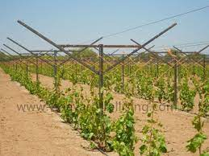

Бу США агрикультура департаменти томонидан яратилган уругсиз ящил куз Кироли(autumn King узум номи)
Бу кеч пишадиган тур болиб Сентябьр ортасидан Ноябьр орталарида терилади
Доналари катта ящил рангли сентябьр октябьр орталарида териладиган узум
Y Trellis тизимида V шаклида ишлаб чикарилган темир тош столба устига орнатилади орнатилади
Икки томонига 3 дан 4 гача болган темир симлари орнатилади, устун бойи пастлиги сабабли коп мехнатни тежайди Барглар Икки томонга мунтазам равишда таркалади ва барча барглар етарли куёш нурига ега болади, шу билан бирга барглар узумни куйдурувчи куёшдаг химоя килади Узум пендал тизимига караганда 15 кун олдин пишади(Пендал тизими узум тепага устун бойлаб шохларсиз чикади кейин барглар ёзиб шохлар чикариб мева беради) Сепилаётган дори узумларга самарали етиб боради
1 метр баландликда устун 165 смдан иккита шох иккита шох орасига 160 смли ёгоч билан котирилади
Изроилда узумлар теплицада етиштирилади. Етиштириш учун Y шаклидаги темирдан килинган устунлар ишлатилади. Томчилаш усулида сугорилади. Узум етишганда терувчилар келиб териб кетишади